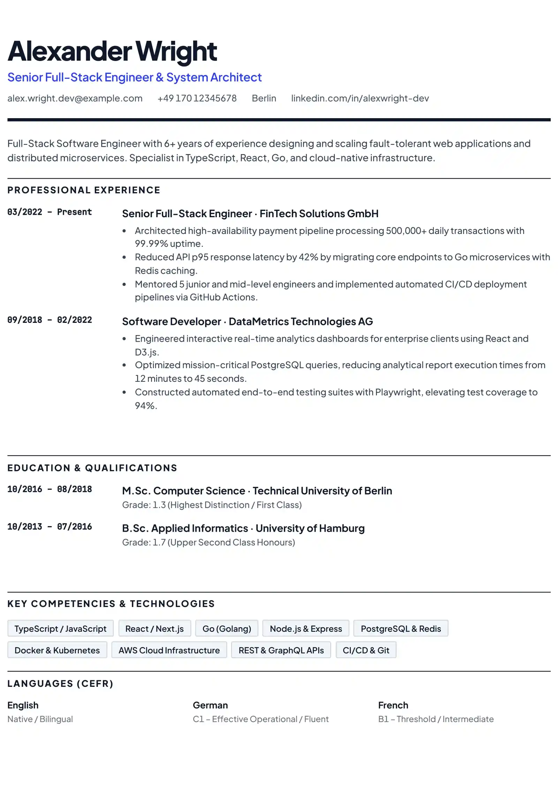
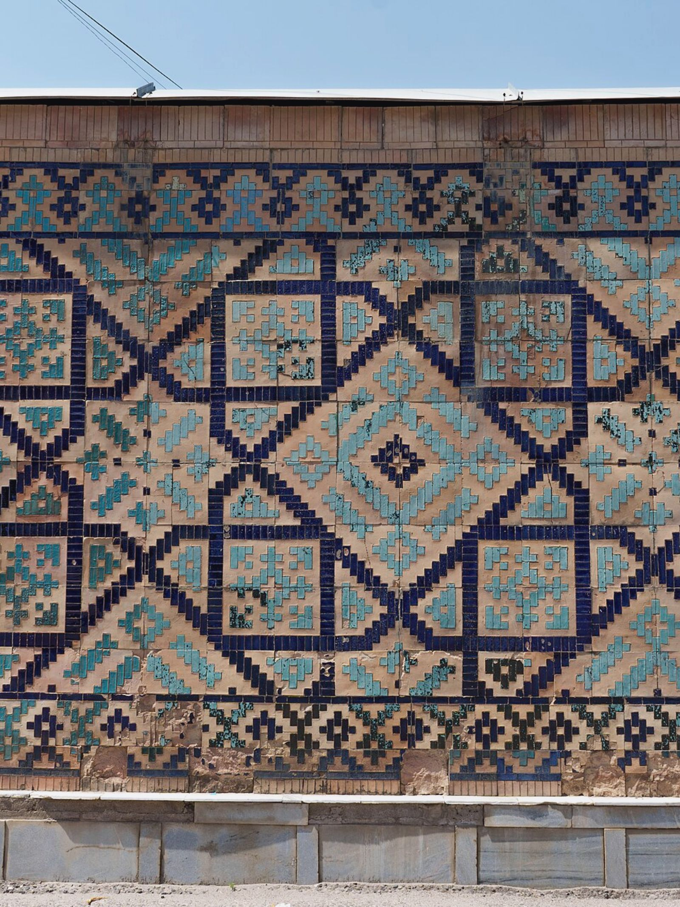
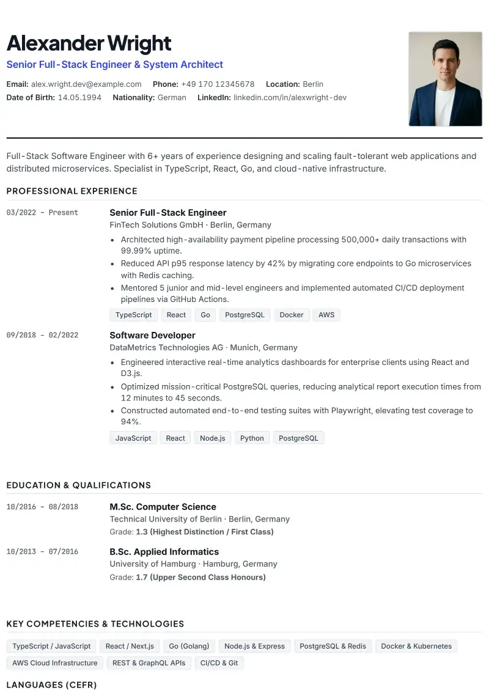
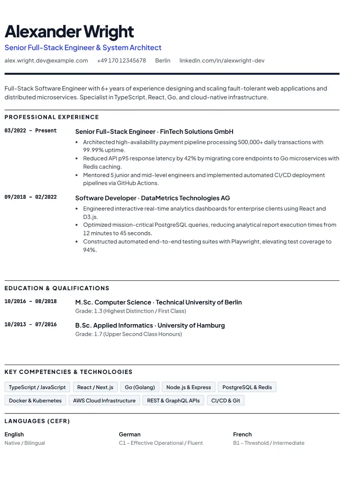
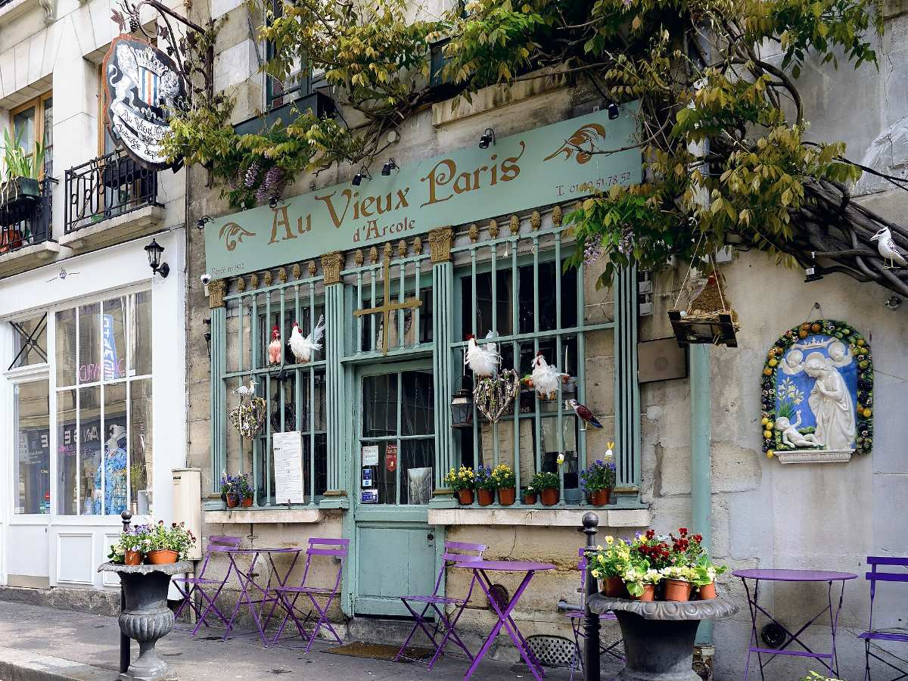
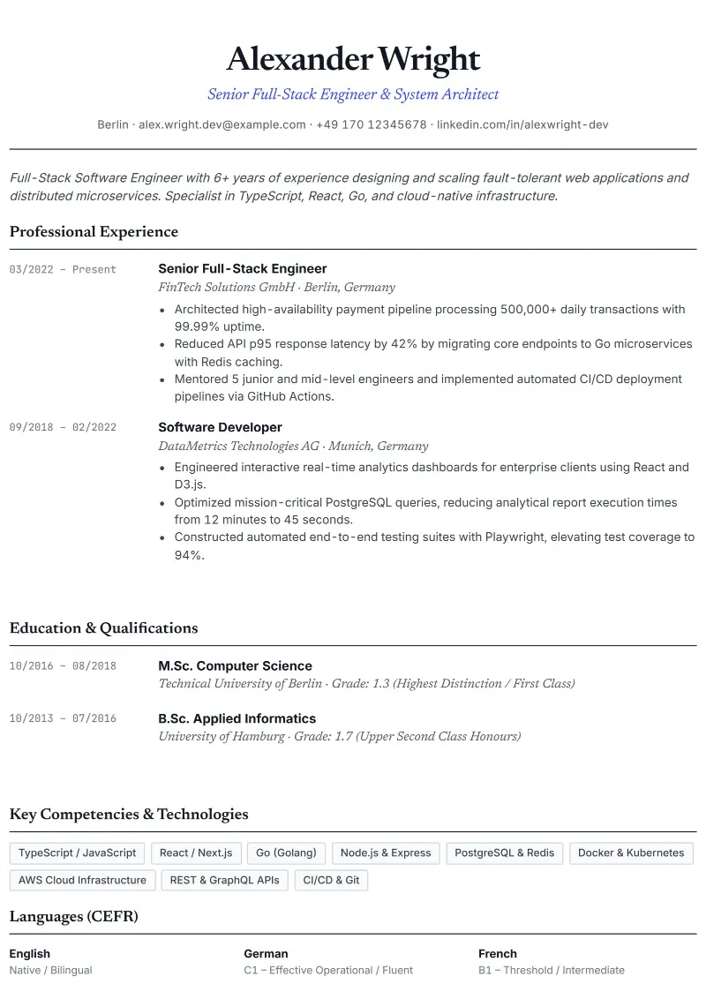
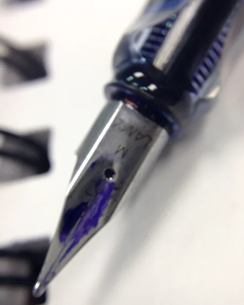

DE · UK · FR · NL
The CV that fits the country you’re applying to.
DIN 5008 for Germany, anti-bias for the UK, one page for France, direct for the Netherlands. Free, no signup, saved in your browser.
Headings in English, Deutsch & Français · CEFR language levels · Projects & certifications



Free
No signup
Saved locally in your browser
A4 PDF export
Europe, Russia and Uzbekistan
Six markets, six ways to read a CV
Every hiring desk expects its own conventions.
Hover, focus, or tap a city to inspect how European CV Studio adapts photo rules, personal fields, headings, and closing signatures.



Why format matters
“In Germany a photo is customary. In the UK it is left out. The same person, a different CV.”
When you apply across borders, subtle layout choices signal whether you understand the local workplace. Switch country presets and section headings between English, Deutsch, Français, Русский, and Oʻzbekcha without rewriting your work history.
Build my CVThree A4 layouts
Frankfurt, Zurich, and Paris.
Tuned for Ultramarine ink and Compact, Standard, or Spacious density, with optional Projects and Certifications.




Sample · Alexander Wright
97/100
TypeScript
React
Go
PostgreSQL
AWS
+ Terraform
ATS & Job Keyword Match
Check your CV against the job posting before you send.
Paste a target job description inside the studio to see matched vs. missing keywords alongside your ATS completeness score, and add missing skills in one click.
- Scores contact completeness, action verbs, metrics, CEFR languages, and regional compliance.
- Highlights unquantified experience bullets with the inline Impact Coach.
How it works
From blank sheet to printed A4 PDF.
01
Choose your market
Select Germany/DACH, UK & Ireland, France, or Netherlands, and set headings in English, Deutsch, or Français.
02

Fill it in, or load the sample
Use guided mode, explore the built-in sample CV, or import a JSON backup. Add CEFR languages, projects, and certifications.
03
Download your PDF
Check your Page Fit meter, auto-fit to one page if needed, and export a clean selectable-text A4 PDF directly from your browser.
Local-first privacy
No account. Your CV stays in your browser.
Your work history and personal details are saved locally in browser storage, never on our servers. Export or import a portable JSON backup any time.
Questions
Common questions before you start.
Do I need a photo?
It depends on the country. A portrait photo is customary in Germany and Austria (DIN 5008), optional in France and the Netherlands, and left out in the UK and Ireland under Equality Act anti-bias guidelines.
What is DIN 5008?
DIN 5008 is the German standard for structured business layouts. In European CV Studio, the Frankfurt layout uses DIN 5008’s asymmetric date column, structured personal header, and optional closing place, date, and signature block.
Is it free?
Yes. Every layout, market preset, ATS score check, keyword matcher, and PDF export runs free in your browser with no signup.
How do I keep my CV safe?
Your CV is saved locally in your browser’s localStorage on this domain. For portability across devices or browsers, click New / Import inside the studio to download or restore a JSON backup.
Will it fit on one page?
The live Page Fit bar measures A4 page usage as you type. Switch between Compact, Standard, and Spacious density or click Auto-fit 1 page whenever a draft spills slightly onto page two.
Do I need a photo for a Russian CV?
No, it is optional. If you include one, a neutral business-style portrait works best rather than a passport photo.
Can I write my CV in Uzbek?
Yes. You can write your CV in Uzbek (Latin script), Russian, or English, and switch section headings independently between Oʻzbekcha, Русский, English, Deutsch, and Français.
Does the ATS check work in Russian and Uzbek?
Yes. The job matcher uses Unicode-aware tokenization, script detection, Uzbek apostrophe normalization, and Russian/Uzbek stop-word filtering.
Ready when you are
Ready to print your A4 CV?
Open the studio, pick your market, and export a clean selectable-text PDF.